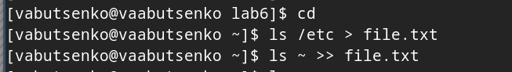
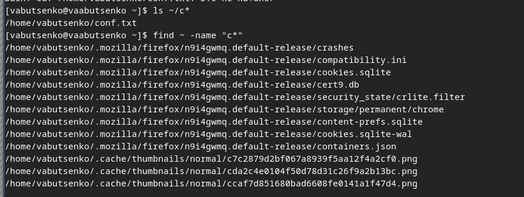
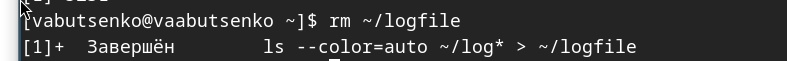
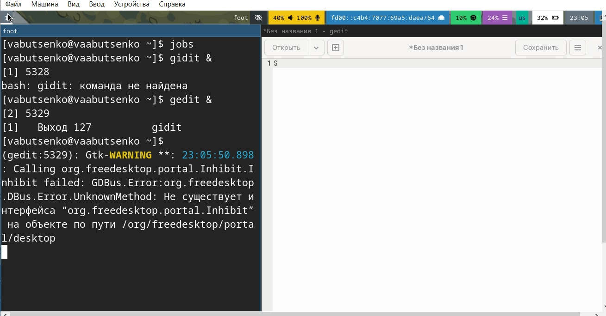
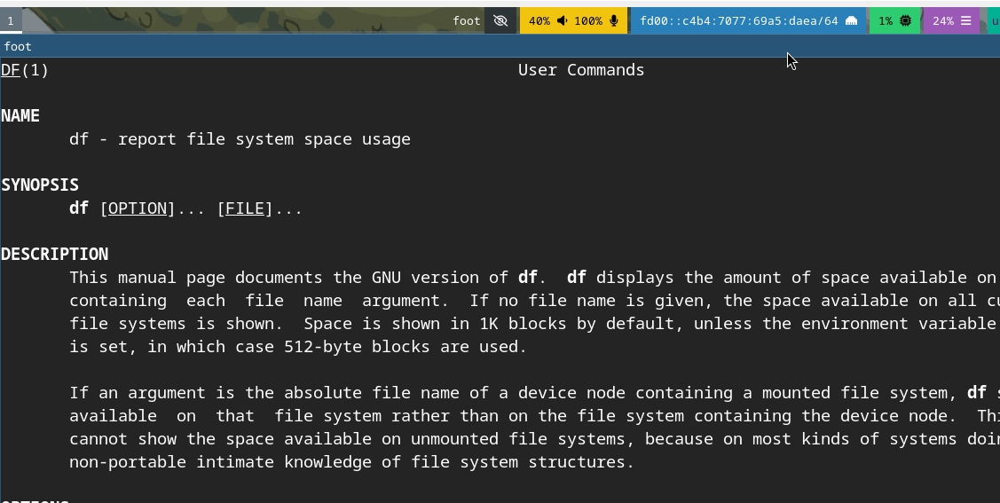
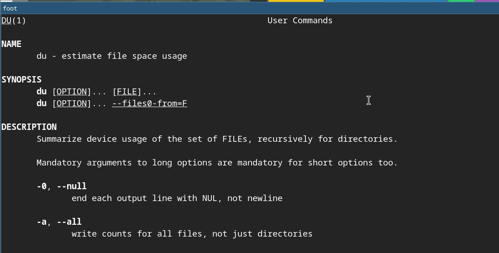

Информация
Докладчик
Вводная часть
Задание
- Осуществите вход в систему, используя соответствующее имя
пользователя.
- Запишите в файл file.txt названия файлов, содержащихся в каталоге
/etc. Допишите в этот же файл названия файлов, содержащихся в вашем
домашнем каталоге.
- Выведите имена всех файлов из file.txt, имеющих расширение .conf,
после чего запишите их в новый текстовой файл conf.txt.
- Определите, какие файлы в вашем домашнем каталоге имеют имена,
начинавшиеся с символа c? Предложите несколько вариантов, как это
сделать.
- Выведите на экран (по странично) имена файлов из каталога /etc,
начинающиеся с символа h.
- Запустите в фоновом режиме процесс, который будет записывать в файл
~/logfile файлы, имена которых начинаются с log.
- Удалите файл ~/logfile.
Задание
- Запустите из консоли в фоновом режиме редактор gedit.
- Определите идентификатор процесса gedit, используя команду ps,
конвейер и фильтр grep. Как ещё можно определить идентификатор
процесса?
- Прочтите справку (man) командыkill, после чего используйте её для
завершения процесса gedit.
- Выполните команды df и du, предварительно получив более подробную
информацию об этих командах, с помощью команды man.
- Воспользовавшись справкой команды find, выведите имена всех
директорий, имеющихся в вашем домашнем каталоге
Выполнение лабораторной
работы
- Осуществила вход в систему, используя соответствующее имя
пользователя.

Выполнение лабораторной
работы
- Записала в файл file.txt названия файлов, содержащихся в каталоге
/etc.

Выполнение лабораторной
работы
Дописала в этот же файл названия файлов, содержащихся в вашем
домашнем каталоге.

Выполнение лабораторной
работы
- Вывела имена всех файлов из file.txt, имеющих расширение .conf,
после чего записала их в новый текстовой файл conf.txt.

Выполнение лабораторной
работы
- Определила, какие файлы в вашем домашнем каталоге имеют имена,
начинавшиеся с символа c.
- ls ~/c*
- find ~ -name “c*”
- ls ~ | grep ‘^c’

Выполнение лабораторной
работы
Выполнение лабораторной
работы
- Вывела на экран (по странично) имена файлов из каталога /etc,
начинающиеся с символа h.
Выполнение лабораторной
работы

Выполнение лабораторной
работы
- Запустила в фоновом режиме процесс, который будет записывать в файл
~/logfile файлы, имена которых начинаются с log.

Выполнение лабораторной
работы
- Удалила файл ~/logfile.

Выполнение лабораторной
работы
- Запустила из консоли в фоновом режиме редактор gedit.

Выполнение лабораторной
работы
- Определила идентификатор процесса gedit, используя команду ps,
конвейер и фильтр grep. Как ещё можно определить идентификатор
процесса?
- ps aux | grep gedit
- pgrep gedit

Выполнение лабораторной
работы
- Прочитала справку (man) команды kill, после чего использовала её для
завершения процесса gedit.

Выполнение лабораторной
работы

Выполнение лабораторной
работы
- Выполнила команды df и du, предварительно получив более подробную
информацию об этих командах, с помощью команды man.

Выполнение лабораторной
работы

Выполнение лабораторной
работы
- Воспользовавшись справкой команды find, вывела имена всех
директорий, имеющихся в вашем домашнем каталоге

Контрольные вопросы
- Какие потоки ввода-вывода вы знаете?
- В Linux и Unix-подобных системах существуют стандартные потоки
ввода-вывода:
- Стандартный ввод (stdin): обычно связан с клавиатурой.
- Стандартный вывод (stdout): обычно связан с экраном (консолью).
- Стандартный вывод ошибок (stderr): также связан с экраном и
используется для вывода сообщений об ошибках.
Контрольные вопросы
- Объясните разницу между операцией > и >>.
“>”: используется для перенаправления вывода команды в файл.
Если файл уже существует, он будет перезаписан.
echo “hello” > file.txt (при существовании)
Запишет “hello” в file.txt, перезаписав его
“>>”: используется для добавления вывода команды в конец
файла. Если файл не существует, он будет создан.
-echo “world” >> file.txt -file.txt. (Добавит “world” в конец
уже существующего)
Контрольные вопросы
- Что такое конвейер?
Конвейер (pipeline) — это механизм, который позволяет передавать
вывод одной команды как ввод для другой команды, обычно с помощью
оператора |.
Например:
ls | grep “.txt” (Переводит выход команды ls в качестве ввода для
grep).
Контрольные вопросы
- Что такое процесс? Чем это понятие отличается от программы?
Процесс — это экземпляр программы, который выполняется в
операционной системе. Он имеет свое состояние, включая данные, указатели
выполнения и ресурсы.
Программа — это статический набор инструкций и данных, хранящихся
на диске.
Процесс — это динамическое выполнение программы. При запуске
программы создается процесс.
Контрольные вопросы
- Что такое PID и GID?
- PID (Process ID) — это уникальный идентификатор процесса,
присвоенный ему системой при создании.
- GID (Group ID) — это идентификатор группы, которому принадлежит
процесс. Он используется для управления правами доступа и групповой
активностью процессов.
Контрольные вопросы
- Что такое задачи и какая команда позволяет ими управлять?
Задачи (jobs) — это процессы, выполняемые в фоне или в переднем
плане. Для управления такими задачами можно использовать следующие
команды:
jobs — показывает список текущих задач.
fg %<номер> — переводит задачу в передний план.
bg %<номер> — переводит задачу в фон.
kill — завершает процесс.
Контрольные вопросы
- Найдите информацию об утилитах top и htop. Каковы их функции?
- top: это утилита, показывающая динамическое отображение активных
процессов, памяти и загрузки CPU в режиме реального времени.
- htop: это улучшенная версия top, предоставляющая более интуитивно
понятный интерфейс с возможностью управления процессами, сортировки и
фильтрации.
Контрольные вопросы
- Назовите и дайте характеристику команде поиска файлов. Приведите
примеры использования этой команды.
find: команда для поиска файлов и каталогов по определенным
критериям.
Примеры:
find /path/to/search -name “*.txt” (Ищет все текстовые
файлы).
find ~ -type d -name “Documents” (Ищет директорию с именем
“Documents” в домашнем каталоге).
Контрольные вопросы
- Можно ли по контексту (содержанию) найти файл? Если да, то как?
Да, можно использовать команду grep для поиска по содержимому
файлов.
Например:
grep -r “search_term” /path/to/search (Ищет “search_term” во всех
файлах в данном каталоге).
Контрольные вопросы
- Как определить объем свободной памяти на жёстком диске?
- Для проверки свободного пространства на жестком диске используйте
команду:
- df -h (Отображает использование диска с понятными размерами).
- Как определить объем вашего домашнего каталога?
- Чтобы узнать размер вашего домашнего каталога, используйте команду:
-du -sh ~ (Показывает общий размер домашнего каталога).
Контрольные вопросы
- Как удалить зависший процесс?
- Чтобы удалить зависший процесс, найдите его PID с помощью команды ps
или top, а затем выполните команду:
- kill (Завершает процесс).
- Если процесс не завершен:
- kill -9 (Убивает процесс принудительно).
Выводы
Запись названий файлов из каталогов в текстовые файлы (file.txt и
conf.txt) демонстрирует умение автоматизировать процесс сбора данных,
что может значительно сократить время, затрачиваемое на ручной поиск
информации.
Определение файлов с конкретными условиями (например,
начинающихся с определенной буквы или имеющих специальное расширение)
говорит о развитии навыков поиска и фильтрации данных с использованием
командных инструментов.
Запуск процессов в фоновом режиме и управление ими (включая
определение идентификатора процесса и его завершение) указывает на
понимание механизма управления процессами в операционной
системе.
Выводы
Обращение к справке команд (man) для получения информации о
доступных командах подтверждает важность понимания и освоения командной
строки в Linux, что является основой для эффективного администрирования
и работы в этой среде.
Команды df, du и find помогают понять использование утилит для
получения информации о файловой системе, управлении пространством и
навигации, что является важной частью администрирования систем.